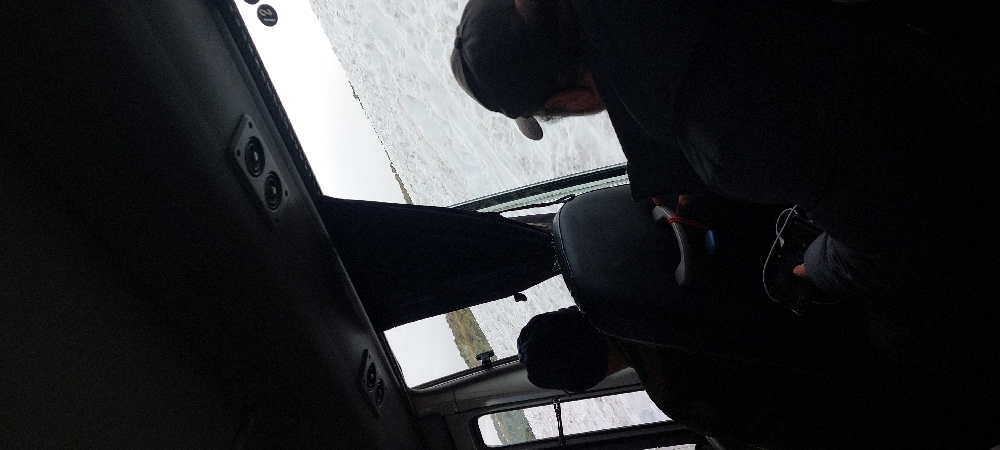

Quand le hasard ressemble au destin
Il y a des regards qui passent,
et d’autres qui restent en nous,
comme une lumière fugace
qui soudain rend le monde plus doux.
Tu es arrivée,
sans promesse et sans bruit,
quelque chose en moi s’est réveillé
que je croyais endormi pour la vie.
Ton sourire a troublé mes silences,
ta présence a changé mes saisons ;
tu as rendu à mon cœur une cadence
que j’avais oubliée sans raison.
Je ne sais pas ce que demain fera,
ni où nos chemins voudront aller,
mais depuis que mes yeux t’ont rencontrée,
le hasard ressemble un peu au destin.
Alors aujourd’hui,
simplement,
je laisse ces quelques mots te trouver :
certaines personnes entrent dans une vie doucement,
et suffisent à lui redonner envie d’aimer.
Djamel Metref
At Yenni le 10 Août 2026
← Tous les poèmes
Quand le hasard ressemble au destin
Amour et désir · Résilience et espoir